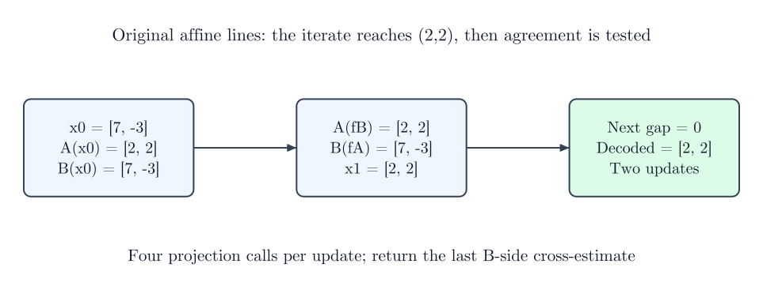
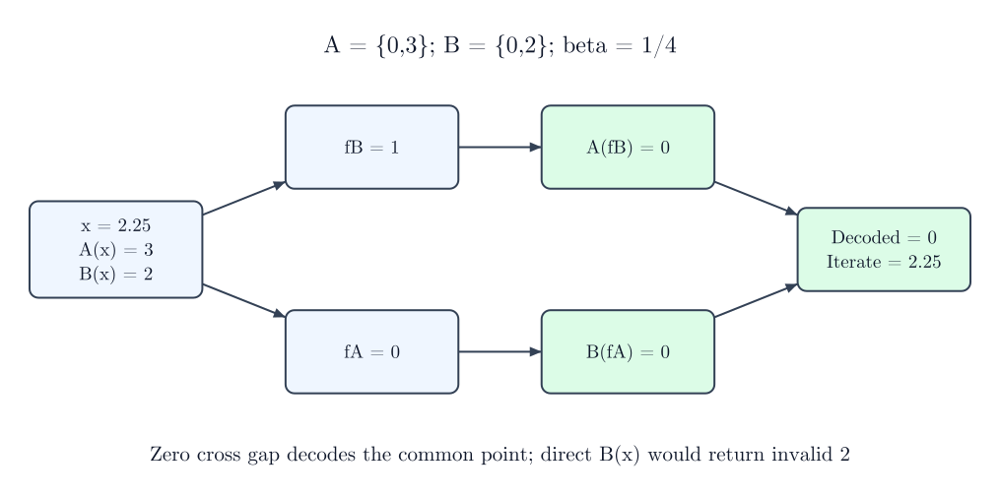
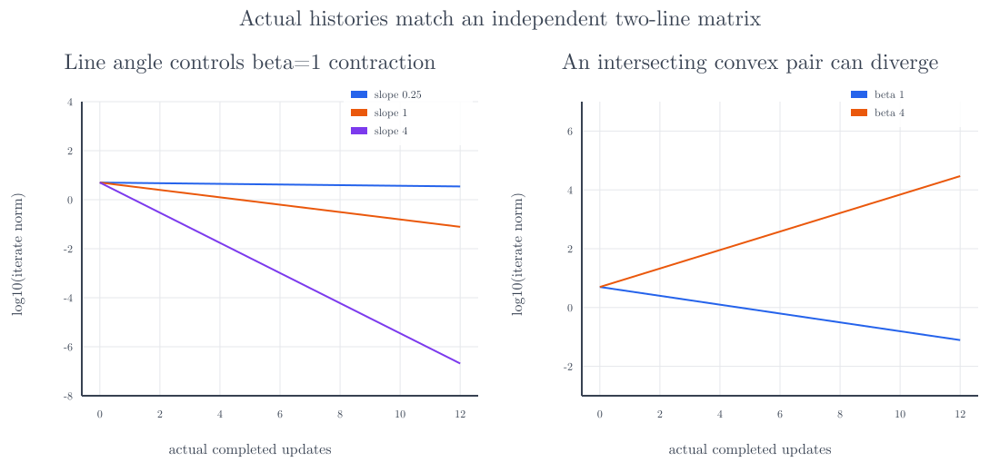
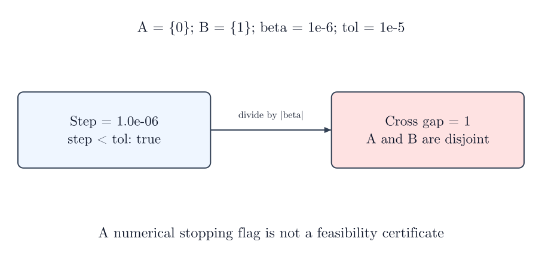

The Difference Map: Decode the Cross-Projections, Not the Iterate
Abstract
Given two constraint sets through nearest-point projection routines, we want a point satisfying both constraints. An iteration can settle at a state outside either set, so identifying the returned feasible point matters as much as the update itself. The difference map combines two cross-projections to search for agreement. We retain the original two-line intersection at (2,2), then expose a one-dimensional fixed point where the old decoder returned an invalid answer. The corrected canonical driver returns the actual B-side cross-estimate and records every intermediate state without rerunning shorter prefixes. An independent two-line matrix predicts contraction or divergence as the angle and beta change. Small-beta and disjoint-set controls show why the preserved numerical stop flag is not a feasibility certificate. Stable norms, checked callbacks and bounded actual histories make those limits observable.
Start with the original two intersecting lines
Set A is y=x; set B is y=−x+4. Their intersection is (2,2). The original start (7,−3) lies on B. With beta=1, the first update reaches (2,2), and the second observes a zero step. The original result remains solution [2,2], two iterations and zero final residual. The new trace also exposes the estimate used to decode the result: after only the first update, the B-side cross- estimate is still [7,−3]. Reaching a good iterate and evaluating agreement there are separate operations.
Projection formulas are reusable core functions here, rather than report-local implementations. A hyperplane normal (1,−1) with offset zero defines A; normal (1,1) with offset four defines B. The complete program prints actual cross-estimates and norms from one execution.
#include <dm/dm.hpp>
int main() {
std::filesystem::create_directories("build");
const auto a=[](const std::vector<double>& x){return dm::algorithms::project_affine_hyperplane(x,{1,-1},0);};
const auto b=[](const std::vector<double>& x){return dm::algorithms::project_affine_hyperplane(x,{1,1},4);};
const auto t=dm::algorithms::difference_map_trace(a,b,{7,-3},1,10000,1e-13);
const auto r=dm::algorithms::difference_map(a,b,{7,-3},1,10000,1e-13);
if(t.steps.size()!=2 || r.solution!=std::vector<double>{2,2} || r.solution!=t.result.solution || !r.converged)return 1;
const auto& first=t.steps.front();const auto& last=t.steps.back();
dm::graphics::Diagram d(65,1100);dm::graphics::DiagramNodeStyle box;box.width=3.3;box.height=1.9;box.font_size=20;
d.node("input",{0,0},std::format("x0 = {}\nA(x0) = {}\nB(x0) = {}",first.x_before,first.projection_a,first.projection_b),box)
.node("cross",{5.3,0},std::format("A(fB) = {}\nB(fA) = {}\nx1 = {}",first.estimate_a,first.estimate_b,first.x_after),box);
box.fill={220,252,231};d.node("agree",{10.6,0},std::format("Next gap = {:.0f}\nDecoded = {}\nTwo updates",last.gap_norm,t.result.solution),box)
.edge("input","cross").edge("cross","agree")
.text({5.3,2.2},"Original affine lines: the iterate reaches (2,2), then agreement is tested",22)
.text({5.3,-2.1},"Four projection calls per update; return the last B-side cross-estimate",21)
.save_svg("build/difference_map_original.svg");
std::print("Original result: solution {}; iterations {}; final step {:.6f}; numerical stop {}.\n\n",r.solution,r.iterations,r.residual,r.converged);
std::print("| update | x before | A(fB) | B(fA) | x after | step norm | cross gap |\n| ---: | :--- | :--- | :--- | :--- | ---: | ---: |\n");
for(const auto& s:t.steps)std::print("| {} | {} | {} | {} | {} | {:.6f} | {:.6f} |\n",s.iteration,s.x_before,s.estimate_a,s.estimate_b,s.x_after,s.step_norm,s.gap_norm);
std::print("\nFirst relaxed vectors: fA {}; fB {}. Actual A calls {}; B calls {}; coordinate updates {}; retained history entries {}.\n",first.f_a,first.f_b,t.work.projection_a_calls,t.work.projection_b_calls,t.work.coordinate_updates,t.work.history_entries);
}Original result: solution [2, 2]; iterations 2; final step 0.000000; numerical stop true.
| update | x before | A(fB) | B(fA) | x after | step norm | cross gap |
|---|---|---|---|---|---|---|
| 1 | [7, -3] | [2, 2] | [7, -3] | [2, 2] | 7.071068 | 7.071068 |
| 2 | [2, 2] | [2, 2] | [2, 2] | [2, 2] | 0.000000 | 0.000000 |
First relaxed vectors: fA [7, -3]; fB [7, -3]. Actual A calls 4; B calls 4; coordinate updates 4; retained history entries 34.

The update and the correct decoded point
For nonzero beta, this implementation uses Elser's parameter choice
At a fixed point with beta nonzero, a=b. Because genuine projectors return a point in A and a point in B respectively, that common value belongs to A∩B. The iterate x itself need not belong to either set. Nor is an arbitrary projection of x necessarily the decoded common point. The corrected result returns the actual b=P_B(f_A(x)) from the final evaluated update; a finite budget or a small nonzero step does not establish exact membership in A.
For beta=1, f_A(x)=x and f_B(x)=2P_B(x)−x. Consequently D_1=I+P_A(2P_B−I)−P_B=(I+R_A R_B)/2, where R_C=2P_C−I. This is the Douglas–Rachford order with B reflected first. For other beta, replacing b by P_B(x) loses the decoder identity. The distinction between fixed iterates and recovered objects is explicit in [Elser's primary paper](https://arxiv.org/abs/math/0111080). The library checks shapes and finite values, but cannot prove that arbitrary callbacks really are projections onto the claimed sets.
A fixed point that exposed the old decoder
Take A={0,3}, B={0,2}, beta=1/4 and x=9/4. All nearest-point choices below are strict, without ties. Then P_A(x)=3, P_B(x)=2, f_A(x)=0 and f_B(x)=1. Both cross-projections are zero, so the iterate stays at 9/4 while the solution is zero. Direct P_B(x)=2 is outside A. A compiled pre-change probe returned that invalid point with a zero residual and converged=true; the replacement decodes the actual common point instead.
On the same sets, alternating projection P_A(P_B(x)) gives three and stays there: it cycles between B's two and A's three. This particular difference- map control succeeds, but it is not a proof of global nonconvex convergence.
#include <dm/dm.hpp>
int main() {
std::filesystem::create_directories("build");
const auto a=[](const std::vector<double>& x){return dm::algorithms::project_finite_set(x,{{0},{3}});};
const auto b=[](const std::vector<double>& x){return dm::algorithms::project_finite_set(x,{{0},{2}});};
const auto t=dm::algorithms::difference_map_trace(a,b,{2.25},.25);const auto& s=t.steps.at(0);
const auto direct=b(t.final_iterate),alternating=a(b({2.25}));
if(t.result.solution!=std::vector<double>{0} || s.x_after!=std::vector<double>{2.25} || direct!=std::vector<double>{2} || a(t.result.solution)!=t.result.solution || b(t.result.solution)!=t.result.solution)return 1;
dm::graphics::Diagram d(65,1100);dm::graphics::DiagramNodeStyle box;box.width=2.7;box.height=1.3;box.font_size=19;
d.node("x",{0,0},std::format("x = {:.2f}\nA(x) = {:.0f}\nB(x) = {:.0f}",s.x_before[0],s.projection_a[0],s.projection_b[0]),box)
.node("fb",{4,1.6},std::format("fB = {:.0f}",s.f_b[0]),box).node("fa",{4,-1.6},std::format("fA = {:.0f}",s.f_a[0]),box);
box.fill={220,252,231};d.node("pa",{8,1.6},std::format("A(fB) = {:.0f}",s.estimate_a[0]),box).node("pb",{8,-1.6},std::format("B(fA) = {:.0f}",s.estimate_b[0]),box)
.node("decoded",{12,0},std::format("Decoded = {:.0f}\nIterate = {:.2f}",t.result.solution[0],t.final_iterate[0]),box)
.edge("x","fb").edge("x","fa").edge("fb","pa").edge("fa","pb").edge("pa","decoded").edge("pb","decoded")
.text({6,3.2},"A = {0,3}; B = {0,2}; beta = 1/4",24)
.text({6,-3.2},"Zero cross gap decodes the common point; direct B(x) would return invalid 2",21)
.save_svg("build/difference_map_decode.svg");
std::print("| quantity | actual value |\n| :--- | :--- |\n");
std::print("| fixed iterate | {} |\n| A(x) | {} |\n| B(x) | {} |\n| fA | {} |\n| fB | {} |\n| A(fB) | {} |\n| B(fA) | {} |\n| corrected solution | {} |\n",t.final_iterate,s.projection_a,s.projection_b,s.f_a,s.f_b,s.estimate_a,s.estimate_b,t.result.solution);
std::print("\nStep {:.6f}; gap {:.6f}; numerical stop {}. Direct B of the fixed iterate {}; A of that point {}.\n\n",s.step_norm,s.gap_norm,t.result.converged,direct,a(direct));
std::print("Alternating projection gives {}; repeating it gives {}. Both projections fix the decoded point {}.\n",alternating,a(b(alternating)),t.result.solution);
}| quantity | actual value |
|---|---|
| fixed iterate | [2.25] |
| A(x) | [3] |
| B(x) | [2] |
| fA | [0] |
| fB | [1] |
| A(fB) | [0] |
| B(fA) | [0] |
| corrected solution | [0] |
Step 0.000000; gap 0.000000; numerical stop true. Direct B of the fixed iterate [2]; A of that point [3].
Alternating projection gives [3]; repeating it gives [3]. Both projections fix the decoded point [0].

Derive a checkable two-line rate
Now let A be the horizontal axis and B the line through the origin with slope m>0. Write c=1/√(1+m²), s=m/√(1+m²), so P_A=diag(1,0) and P_B has rows (c²,cs) and (cs,s²). Substituting these matrices into the update cancels the reciprocal-beta terms and gives
The last equality follows from T_beta transpose times T_beta=q²I. For beta=1, q=c: shallow crossing angles contract slowly, and perpendicular lines have q=0. For slope one, beta four instead gives q=√4.25>1 even though both sets are convex and intersect at the origin. An arbitrary nonzero beta does not inherit a general convergence claim. The programs deliberately use tol=0 to keep twelve actual updates for these finite comparisons.
#include <dm/dm.hpp>
int main() {
std::filesystem::create_directories("build");
const std::vector<std::pair<double,double>> cases{{.25,1},{1,1},{4,1},{1,4}};
const std::vector<dm::graphics::RGB> colors{{37,99,235},{234,88,12},{124,58,237}};
auto angles=dm::graphics::RPlot::create(),beta_plot=dm::graphics::RPlot::create();double max_relative=0;
std::print("| slope m | beta | predicted q | updates | final iterate norm | final step | A calls | B calls | history entries |\n| ---: | ---: | ---: | ---: | ---: | ---: | ---: | ---: | ---: |\n");
for(std::size_t k=0;k<cases.size();++k) {
const auto [m,beta]=cases[k];const auto a=[](const std::vector<double>& x){return dm::algorithms::project_affine_hyperplane(x,{0,1},0);};
const auto b=[m](const std::vector<double>& x){return dm::algorithms::project_affine_hyperplane(x,{-m,1},0);};
const auto t=dm::algorithms::difference_map_trace(a,b,{3,4},beta,12,0);const double c2=1/(1+m*m),cs=m*c2,q=std::sqrt(c2*c2+beta*beta*cs*cs);
std::vector<double> iterations{0},lognorm{std::log10(5.)};
for(const auto& step:t.steps) {
const double norm=std::hypot(step.x_after[0],step.x_after[1]);const double prediction=5*std::pow(q,step.iteration);
max_relative=std::max(max_relative,std::abs(norm/prediction-1));iterations.push_back(step.iteration);lognorm.push_back(std::log10(norm));
}
if(k<3)angles.line(iterations,lognorm,std::format("slope {}",m),colors[k],2);
if(k==1 || k==3)beta_plot.line(iterations,lognorm,std::format("beta {}",beta),k==1?colors[0]:colors[1],2);
std::print("| {} | {} | {:.6f} | {} | {:.6e} | {:.6e} | {} | {} | {} |\n",m,beta,q,t.result.iterations,std::hypot(t.final_iterate[0],t.final_iterate[1]),t.result.residual,t.work.projection_a_calls,t.work.projection_b_calls,t.work.history_entries);
}
if(max_relative>1e-10)return 1;
angles.title("Line angle controls beta=1 contraction").x_label("actual completed updates").y_label("log10(iterate norm)").y_limits(-8,4);
beta_plot.title("An intersecting convex pair can diverge").x_label("actual completed updates").y_label("log10(iterate norm)").y_limits(-3,7);
dm::graphics::RLayout::create(1,2).add(angles).add(beta_plot).size(1100,520).title("Actual histories match an independent two-line matrix").fit_panels().save_svg("build/difference_map_rates.svg");
std::print("\nAll 48 actual iterate norms checked against 5*q^k; maximum relative discrepancy {:.3e}. No residual floors or prefix reruns.\n",max_relative);
}| slope m | beta | predicted q | updates | final iterate norm | final step | A calls | B calls | history entries |
|---|---|---|---|---|---|---|---|---|
| 0.25 | 1 | 0.970143 | 12 | 3.475333e+00 | 8.688331e-01 | 24 | 24 | 204 |
| 1 | 1 | 0.707107 | 12 | 7.812500e-02 | 7.812500e-02 | 24 | 24 | 204 |
| 4 | 1 | 0.242536 | 12 | 2.071460e-07 | 8.285839e-07 | 24 | 24 | 204 |
| 1 | 4 | 2.061553 | 12 | 2.946481e+04 | 2.946481e+04 | 24 | 24 | 204 |
All 48 actual iterate norms checked against 5*q^k; maximum relative discrepancy 8.882e-16. No residual floors or prefix reruns.

Small steps, infeasibility, zero budgets and bounded histories
The residual is the Euclidean step norm, so in exact arithmetic
The primary paper monitors the cross-projection gap; this API retains the repository's older step-norm residual. The legacy strict test step<tol only implies cross gap<tol/beta, subject to rounding. With A={0}, B={1}, beta=10−6 and tol=10−5, it stops after one update despite the cross gap being one and the intersection empty. The API preserves that numerical flag's meaning and exposes the gap separately. A caller must validate the decoded point against its actual constraints. For beta=1 these disjoint sets instead produce a constant unit displacement; the driver reaches its iteration limit. No algorithm can return a common point for an empty intersection.
#include <dm/dm.hpp>
int main() {
std::filesystem::create_directories("build");
const auto a=[](const std::vector<double>& x){return dm::algorithms::project_finite_set(x,{{0}});};
const auto b=[](const std::vector<double>& x){return dm::algorithms::project_finite_set(x,{{1}});};
const auto small=dm::algorithms::difference_map_trace(a,b,{0},1e-6,10,1e-5),drift=dm::algorithms::difference_map_trace(a,b,{0},1,5,1e-12),zero=dm::algorithms::difference_map_trace(a,b,{0},1,0);
dm::graphics::Diagram d(75,1100);dm::graphics::DiagramNodeStyle box;box.width=4.3;box.height=1.7;box.font_size=23;
d.node("step",{0,0},std::format("Step = {:.1e}\nstep < tol: {}",small.result.residual,small.result.converged),box);
box.fill={254,226,226};d.node("gap",{7,0},std::format("Cross gap = {:.0f}\nA and B are disjoint",small.steps.back().gap_norm),box)
.edge("step","gap","divide by |beta|")
.text({3.5,2.3},"A = {0}; B = {1}; beta = 1e-6; tol = 1e-5",24)
.text({3.5,-2.3},"A numerical stopping flag is not a feasibility certificate",24)
.save_svg("build/difference_map_stopping.svg");
std::print("| control | updates | numerical stop | residual | final iterate | returned estimate | observed gap |\n| :--- | ---: | :--- | ---: | :--- | :--- | :--- |\n");
std::print("| small beta | {} | {} | {:.6e} | {} | {} | {:.6f} |\n",small.result.iterations,small.result.converged,small.result.residual,small.final_iterate,small.result.solution,small.steps.back().gap_norm);
std::print("| disjoint drift | {} | {} | {:.6e} | {} | {} | {:.6f} |\n",drift.result.iterations,drift.result.converged,drift.result.residual,drift.final_iterate,drift.result.solution,drift.steps.back().gap_norm);
std::print("| zero budget | {} | {} | {:.6e} | {} | {} | not evaluated |\n\n",zero.result.iterations,zero.result.converged,zero.result.residual,zero.final_iterate,zero.result.solution);
std::print("Zero budget: A calls {}; B calls {}; retained steps {}. Its zero residual is the historical unevaluated sentinel.\n\n",zero.work.projection_a_calls,zero.work.projection_b_calls,zero.steps.size());
const auto la=[](const std::vector<double>& x){return dm::algorithms::project_affine_hyperplane(x,{1,-1},0);};
const auto lb=[](const std::vector<double>& x){return dm::algorithms::project_affine_hyperplane(x,{1,1},4);};
const auto exact=dm::algorithms::difference_map_trace(la,lb,{7,-3},1,10000,1e-13,34);
int calls=0;const auto ca=[&](const std::vector<double>& x){++calls;return la(x);};const auto cb=[&](const std::vector<double>& x){++calls;return lb(x);};bool capped=false;
try{dm::algorithms::difference_map_trace(ca,cb,{7,-3},1,10000,1e-13,33);}catch(const std::length_error&){capped=true;}
if(!capped || calls!=4 || exact.work.history_entries!=34)return 1;
std::print("Online history: cost {} per two-dimensional record; exact cap 34 succeeds with {} records; cap 33 throws before a second update, after {} actual calls.\n\n",dm::algorithms::difference_map_history_cost(2),exact.steps.size(),calls);
std::print("| displacement component scale | stable step norm | finite | numerical stop |\n| ---: | ---: | :--- | :--- |\n");
for(double scale:{1e200,1e-200}) {
const auto pa=[scale](const std::vector<double>&){return std::vector<double>{scale,scale};};const auto pb=[](const std::vector<double>&){return std::vector<double>{0,0};};
const auto t=dm::algorithms::difference_map_trace(pa,pb,{0,0},1,1,1e-250);
std::print("| {:.1e} | {:.6e} | {} | {} |\n",scale,t.result.residual,std::isfinite(t.result.residual),t.result.converged);
if(!std::isfinite(t.result.residual) || t.result.residual==0 || t.result.converged)return 1;
}
}| control | updates | numerical stop | residual | final iterate | returned estimate | observed gap |
|---|---|---|---|---|---|---|
| small beta | 1 | true | 1.000000e-06 | [-1e-06] | [1] | 1.000000 |
| disjoint drift | 5 | false | 1.000000e+00 | [-5] | [1] | 1.000000 |
| zero budget | 0 | false | 0.000000e+00 | [0] | [1] | not evaluated |
Zero budget: A calls 0; B calls 1; retained steps 0. Its zero residual is the historical unevaluated sentinel.
Online history: cost 17 per two-dimensional record; exact cap 34 succeeds with 2 records; cap 33 throws before a second update, after 4 actual calls.
| displacement component scale | stable step norm | finite | numerical stop |
|---|---|---|---|
| 1.0e+200 | 1.414214e+200 | true | false |
| 1.0e-200 | 1.414214e-200 | true | false |

Core contracts, work and verification
The callable template signature, defaults and four-field result layout/formatter are preserved. Correct decoding intentionally changes solution estimates when beta differs from one or a positive iteration budget stops before agreement. The driver calls A(x), B(x), A(f_B), B(f_A) in that order and returns the last B cross-estimate without the old extra final B(x_after) call. With zero budget it retains the separate historical fallback B(x0), zero residual and false stop flag. Empty-dimensional vectors are valid if both callbacks preserve the dimension. All controls and initial values are checked before callbacks; every output is checked before indexing. Arithmetic failures, malformed or nonfinite outputs and callback exceptions throw without a partial result. Earlier callback side effects cannot be undone. Zero tolerance deliberately disables the strict stop, even for a zero step.
Stable hypot norms avoid squaring overflow and underflow; other vector arithmetic remains floating and must stay representable. The reusable affine projector scales the normal and uses checked long-double intermediates, whose extra precision/range depends on the platform. The finite-set projector validates every candidate and chooses the earliest on a numerical distance tie. Neither routine promises exact geometry or universal full-range arithmetic.
For k positive updates in dimension n, the driver makes 2k calls to each projection and performs kn coordinate updates. Vector work is O(kn), in addition to projection costs; ordinary driver storage is O(n). The rich trace retains eight n-vectors per update plus metadata: O(k(n+1)) history. One retained record costs 1+8n entries under its default one-million-entry cap. That cap excludes initial/final/result vectors and transient buffers, is checked online before the next iteration's calls, and needs space only for actual records. Zero disables only the optional cap; capacity, counter and entry-cost arithmetic checks remain. These counters exclude callback internals, validation, norm work, copies and allocation, and are not timings.
Independent tests compare 12,000 recorded updates with the derived two-line matrix over five slopes, eight beta values and 25 seeded starts per pair. They check intermediate/returned estimates, stable norms, actual callback order, move-only callable compatibility, ownership, zero-dimensional and zero-budget behavior, exact history caps and overflow, malformed callbacks, exceptions and control validation. One thousand seeded projector trials add orthogonality/idempotence and exact small-integer nearest-point checks. The original line cases, fixed-iterate decoding bug, disjoint drift, small-beta false feasibility inference and convex divergence are explicit controls. No external dataset is needed for these finite geometric checks.
References
- V. Elser (2003), “Phase retrieval by iterated projections”, Journal of the Optical Society of America A 20(1), 40–55. [Primary preprint](https://arxiv.org/abs/math/0111080), [published DOI](https://doi.org/10.1364/JOSAA.20.000040). The chosen reciprocal-beta parameters and decoding of the common cross-projection follow this method; the numerical contracts and actual-history controls are specified here.